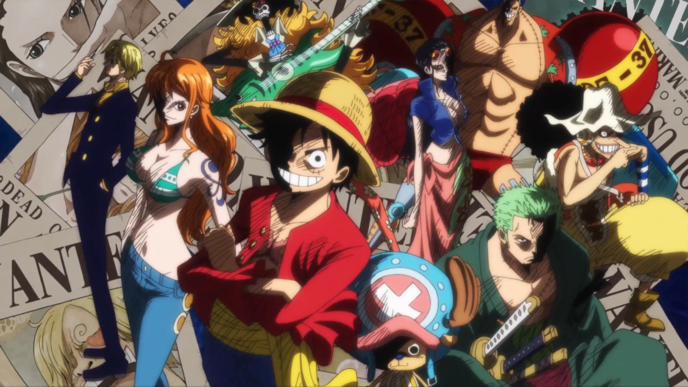

This page will be used to show my three favorite animes. It will describe each anime in details. First lets talk about what anime is and why I chose it as my favorite topic and why I am activily building a website around anime. Anime is what the world has come to know as Japanese animation or cartoons. It has become increasingly popular over the years. Anime has every genrethat you can think of and it is suited for anyone that's willing to watch it. There is action, comedy, horror, shooter, slice of life, thriller, myhtology, sports, racing and many more options to pick from you just have to be willing to look for it.
This quote was said by a villain during the third great shinobi war.
Wake up to reality! Nothing ever goes as planned in this accursed world. The longer you live, the more you realize that the only things that truly exist in this reality are merely pain. suffering and futility. Listen, everywhere you look in this world, wherever there is light, there will always be shadows to be found as well. As long as there is a concept of victors, the vanquished will also exist. The selfish intent of wanting to preserve peace, initiates war. and hatred is born in order to protect love. There are nexuses causal relationships that cannot be separated - Madara Uchiha
“When Do You Think People Die? When They Are Shot In The Heart With A Pistol? No. When They Are Ravaged By An Uncurable Disease? No. When They Drink A Soup Made From Poisonous Mushrooms? No. It’s When... They Are Forgotten!” -Dr.Hiriluk
“Inherited Will, The Destiny Of Age, The Dreams Of Its People. As Long As People Continue To Pursue The Meaning Of Freedom, These Things Will Never Cease!” -Gol D. Roger
The links are split into two different groups the primary links which are websites that only have anime content. The secondary sources are streaming services that have other forms of entertainment but also have some anime.